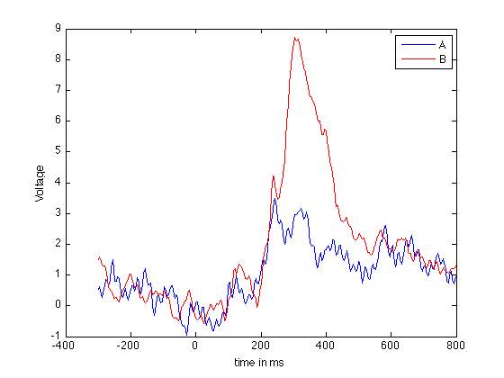

Recurrence Plots and Recurrence Quantification of EEG
These are the lecuture notes to a crashcourse introduction to the analysis of EEG data by means of recurrence quantification. The course was held in Vietri sul Mare (IT), May 2-4, 2012 within the timely (http://www.timely-cost.eu/) framework and supported by European Union.
Contents
- Requirements
- Comments/Questions:
- Definition Recurrence plot
- System Dynamics, Phase spaces and their reconstruction
- Lorenz system
- Solving the Lorenz System
- Phase space reconstruction
- Temporal dynamics of the Lorenz System
- Parameter estimation
- Recurrence Plots
- "Standard" RPs
- Visual analysis
- Order Patterns Recurrence Plot
- Patterns vs. Numbers
- Recurrence Quantification
- EEG analysis using RQA
- Recurrence Plots of EEG data
- Recurrence Quantification of EEG data
- Comparison of Conditions
- Further reading/getting help
- Exercises:
Requirements
In order to work through the examples you will need Matlab and the CRPtoolbox which can be downloaded here: http://tocsy.pik-potsdam.de/CRPtoolbox/.
The toolbox is written and maintained by Norbert Marwan of the Potsdam Institute for Climate Impact Research.
Comments/Questions:
Are welcome and should be sent to: schinkel@physik.hu-berlin.de
Definition Recurrence plot
A recurrence plot (RP) is an advanced technique of nonlinear data analysis. It is a visualisation (or a graph) of a square matrix, in which the matrix elements correspond to those times at which a state of a dynamical system recurs (columns and rows correspond then to a certain pair of times). Techniqually, the RP reveals all the times when the phase space trajectory of the dynamical system visits roughly the same area in the phase space.
System Dynamics, Phase spaces and their reconstruction
To get an idea about phase spaces, we will start by investigating a prototypical system, the Lorenz System. We will first look at its phase space portrait and the reconstruct the phase from only a partial observation. The reconstruction of a systems phase space is often a requirement for the construction of recurrence plots from measured data.
Lorenz system
The Lorenz system in a common toy system in nonlinear dynamics. It is defined by the following equations:

with the ] parameters , , the system evolves around a strange attractor. The phase space portrait is the famous butterfly-like shape.
This function can easily be solved in Matlab. Save the function definition below to a file called lorenzEq.m and the use a built-in solver (ode45) to integrate the equations.
% function dx = lorenzEq(t,x) % % dx = zeros(3,1); % dx(1) = 10 * (x(2) - x(1)); % dx(2) = 28 * x(1) - x(2) - x(1) * x(3); % dx(3) = x(1) * x(2) - 8/3 * x(3);
Solving the Lorenz System
solve the equation
[t x] = ode45('lorenzEq',[0:.01:50],[5 5 5]); % To get a head start we can use precomputed data % stored on my website url= 'http://dreeg.org/timely/lorenz.dat'; x = urlread(url); % since it was stored as text, we have to make it to numbers % and reshape it a little x = str2num(x); t = x(:,1); x = x(:,2:4); % plot lorenz plot(t,x); xlabel('Time'), ylabel('x, y, z'), title('Lorenz System') % plot ps portrait figure plot3(x(:,1), x(:,2),x(:,3)); view(-173,42); xlabel('x'), ylabel('y'), zlabel('z');
Phase space reconstruction
Now we reconstruct the system from only on component. This is the delay-embedding introduced by Takens

figure tau = 22; plot3(x(1:end-2*tau,1),x(1+tau:end-tau,1),x(1+2*tau:end,1)); view(2); xlabel('x'), ylabel('y'), zlabel('z') % The system is recognisable, though a little distorted, by the main, % feature, that it evolves around to fix points restored. This is even % more obvious if we look at the temporal dynamics.
Temporal dynamics of the Lorenz System
The interesting thing about the Lorenz system is its evolution over time. Lets look at that
% set up a figure figure hold on view(-173,42); xlim([-20 20]); ylim([-30 30]); zlim([0 50]); %loop over the data to see the temporal evolution of the system for i = 1:5:3000 plot3(x(i:i+10,1),x(i:i+10,2),x(i:i+10,3)); drawnow end % now we do the same for the reconstructed data clf hold on xlim([-20 20]); ylim([-20 20]); view(2); for i = 1:5:3000, plot3(x(i:i+10,1),x(i+tau:i+tau+10,1),x(i+2*tau:i+2*tau+10,3)); drawnow end
Parameter estimation
The required parameters can be estimated using functions in the CRPtoolbox
% The mi function computes the time-lagged mutual information function % we will use the first minimum as an estimate for the embedding delay. % It uses histograms, we use 10 bins for those, and compute for a maximal % lag of 30. nBins = 10; maxDelay = 30; mi(x(:,1),nBins,maxDelay); % The FNN function implement a false nearest neighbours approach % to estimate the embedding dimension, we go up to dimension 10 % and use the delay estimated above(22) maxDim = 10; tau = 22; fnn(x(:,1),maxDim,tau);
Recurrence Plots
Lets now get to recurrence plot. We already have a chaotic system, but for comparison it would be nice to have some random and periodic system as well.
% construct noise and sine
sine = sin( 0:pi/100 : 5*pi );
noise = rand(1,length(sine));
"Standard" RPs
Now we compute the RPs for all three systems using the euclidean norm (numeric distance in phase space)
rpSine = crp(sine,2,1,.1,'eucl','norm'); rpNoise = crp(noise,2,1,.1,'eucl','norm'); rpLorenz = crp(x(:,1),3,22,.3,'eucl','norm');
use method: Euclidean norm normalize data use method: Euclidean norm normalize data use method: Euclidean norm normalize data
Visual analysis
Visual inspection already reveals that typical system have a unique recurrence structure. In noise there is hardly any structure, periodical system have long continuous lines and chaotic systems are somewhere in between.
figure;imagesc(rpNoise);title('noise') set(gca,'Ydir','normal') colormap(flipud(gray(2)));xlabel('time'),ylabel('time'); figure;imagesc(rpSine);title('sine') set(gca,'Ydir','normal') colormap(flipud(gray(2)));xlabel('time'),ylabel('time'); figure;imagesc(rpLorenz);title('lorenz') set(gca,'Ydir','normal') colormap(flipud(gray(2)));xlabel('time'),ylabel('time'); xlim([1 1000]) ylim([1 1000])
Order Patterns Recurrence Plot
Instead of a numerical similarity, we can also use order patterns to look for recurrences in a symbolic space
oprpSine = crp(sine,2,1,.1,'op','norm'); oprpNoise = crp(noise,2,1,.1,'op','norm'); oprpLorenz = crp(x(:,1),3,22,.3,'op','norm'); figure;imagesc(oprpNoise);title('noise') set(gca,'Ydir','normal') colormap(flipud(gray(2)));xlabel('time'),ylabel('time'); figure;imagesc(oprpSine);title('sine') set(gca,'Ydir','normal') colormap(flipud(gray(2)));xlabel('time'),ylabel('time'); figure;imagesc(oprpLorenz);title('lorenz') set(gca,'Ydir','normal') colormap(flipud(gray(2)));xlabel('time'),ylabel('time');
use method: order pattern normalize data use method: order pattern normalize data use method: order pattern normalize data
Patterns vs. Numbers
Again looking at the figures, what do you see? What can you learn for the analysis based on order patterns?
Recurrence Quantification
Recurrence Quantification can be used to further investigate the structures in an RP, which provides insights on the time dependent behaviour of the system. We will practice that with EEG data from a standard oddball-experiment (Sutton 1965)
EEG analysis using RQA
EEG/ERP analysis is used to investigate the brains response to given stimulus. The prime advantage it its high temporal resolution. In order to study the temporal dynamics, we will use the RQA in a windowed fashion ie. we extract small windows from the RP and quantify those.
% The data for a single subject P3 can be downloaded from my website. % For convenience we will refer to the condition with P3 as "a" and that % without as conditions "b" % clean up workspace clear close all % load data urlA = 'http://dreeg.org/timely/c10.dat'; urlB = 'http://dreeg.org/timely/c11.dat'; a = str2num(urlread(urlA)); b = str2num(urlread(urlB)); % both matrices are 40x276, where the 1st dimension are the electrodes, % the 2nd is time. The data is already averaged over trials. % The EEG is sampled from -300ms pre-stimulus to 800 ms post-stimulus % at 250Hz (4ms steps). timeScale = -300:4:800; % First we look at Voltage measurements at Pz (channel 27) % which reveals a well-pronounced P300 plot(timeScale,a(27,:)); hold on; plot(timeScale,b(27,:),'r'); legend('A','B'); xlabel('time in ms'); ylabel('Voltage');
Recurrence Plots of EEG data
Now we look at the RPs of the data. We will use the recurrence criterion introduced by Eckmann et al, fixed amount of nearest neighbours ('fan').
% Embedding dimension and delay dim = 3; tau = 4; % the threshold we use is .1 (10% nearest neighbours) thresh = .1; % construct RPs rpA = crp(a(27,:),dim,tau,thresh,'fan'); rpB = crp(b(27,:),dim,tau,thresh,'fan'); % adjust the timeScale to compensate for embedding tsNew = timeScale(1:size(rpA,1)); %and plot the RPs figure;imagesc(rpA); title('Condition A') set(gca,'Ydir','normal') set(gca,'XTickl',tsNew(get(gca,'XTick'))) colormap(flipud(gray(2))); xlabel('time'); ylabel('time'); figure; imagesc(rpB); title('Condition B') set(gca,'Ydir','normal') set(gca,'XTickl',tsNew(get(gca,'XTick'))) colormap(flipud(gray(2))); xlabel('time'); ylabel('time');
use method: fixed amount of nearest neighbours normalize data use method: fixed amount of nearest neighbours normalize data
Look at the plots and inspect them for differences. Try different norms and thresholds (this is easiest done using the GUI
crp(a(27,:); crp(b(27,:);
Recurrence Quantification of EEG data
The plots already "look different". In order to quantify the differences, we compute the recurrence based complexity measures (ie RQA) over time in windows of 240ms with a shifting of 20ms.
win = 60; step = 5; % Try different norms and thresholds. % We do this for all electrodes this time. % Computation will take a little (about 2min % or so). To not get too bored, we ask % Matlab to tell us how long it takes % for each electrode. for iElec = 1:40 tic, rqaA(iElec,:,:) = crqa(a(iElec,:),dim,tau,thresh,win,step,'fan','sil'); rqaB(iElec,:,:) = crqa(b(iElec,:),dim,tau,thresh,win,step,'fan','sil'); disp(sprintf('Electrode %d of %d took %2.2f seconds',iElec,40,toc)); end %iElec
Electrode 1 of 40 took 6.15 seconds Electrode 2 of 40 took 5.99 seconds Electrode 3 of 40 took 6.01 seconds Electrode 4 of 40 took 6.00 seconds Electrode 5 of 40 took 5.98 seconds Electrode 6 of 40 took 6.00 seconds Electrode 7 of 40 took 6.02 seconds Electrode 8 of 40 took 6.01 seconds Electrode 9 of 40 took 6.00 seconds Electrode 10 of 40 took 5.99 seconds Electrode 11 of 40 took 6.09 seconds Electrode 12 of 40 took 6.05 seconds Electrode 13 of 40 took 5.97 seconds Electrode 14 of 40 took 6.00 seconds Electrode 15 of 40 took 5.99 seconds Electrode 16 of 40 took 6.00 seconds Electrode 17 of 40 took 5.96 seconds Electrode 18 of 40 took 5.99 seconds Electrode 19 of 40 took 6.04 seconds Electrode 20 of 40 took 6.01 seconds Electrode 21 of 40 took 6.01 seconds Electrode 22 of 40 took 6.00 seconds Electrode 23 of 40 took 5.99 seconds Electrode 24 of 40 took 6.03 seconds Electrode 25 of 40 took 5.99 seconds Electrode 26 of 40 took 6.03 seconds Electrode 27 of 40 took 6.06 seconds Electrode 28 of 40 took 6.02 seconds Electrode 29 of 40 took 6.03 seconds Electrode 30 of 40 took 6.02 seconds Electrode 31 of 40 took 5.98 seconds Electrode 32 of 40 took 6.00 seconds Electrode 33 of 40 took 5.99 seconds Electrode 34 of 40 took 6.00 seconds Electrode 35 of 40 took 6.03 seconds Electrode 36 of 40 took 5.98 seconds Electrode 37 of 40 took 5.99 seconds Electrode 38 of 40 took 5.98 seconds Electrode 39 of 40 took 6.02 seconds Electrode 40 of 40 took 6.01 seconds
Comparison of Conditions
rqa = crqa() returns DET in the second column (ie rqa(:,2) ), which is now shifted by one dimension since we did it for all electrodes. The measure DET is a measure for determinism (in the sense of predictability) in the the signal. Lets plot that for all electrodes in a surface plot.
figure; surf(timeScale(1:step:size(rqaA,2)), 1:40,rqaA(:,1:step:end,2)); view(2); colorbar; axis tight title('DET in condition A'); xlabel('time in ms'); ylabel('electrodes'); figure; surf(timeScale(1:step:size(rqaB,2)), 1:40,rqaB(:,1:step:end,2)); view(2); colorbar; axis tight title('DET in condition B'); xlabel('time in ms'); ylabel('electrodes');
This already reveals a higher level in DET in condition B, the condition that features a P300. To highlight that difference we now plot the difference
% compute difference deltaDET = rqaB(:,:,2) - rqaA(:,:,2); % and plot it figure surf(timeScale(1:step:size(deltaDET,2)), 1:40,deltaDET(:,1:step:end)); view(2); colorbar; axis tight title('DET difference condition B-A'); xlabel('time in ms'); ylabel('electrodes');
Further reading/getting help
Plenty of information can be found on the net. A good starting point is http://www.recurrence-plot.tk, which has plenty of information about the method as well as a comprehensive bibliography and a forum.
Exercises:
1) Analyse the logistic map Begin with an interval for r from [3.5 4]. Then proceed by studying in [3 4]. Can you detect transitions ? Can you relate those to the bifurcation diagram of the logitic map
% function out = logistic(x0,r,n) % out(1) = x0; % for i = 1:n-1 % out(i+1) = r*out(i)*(1-out(i)); % end
2) Further study the EEG data provided. Use the software on my website http://dreeg.org to estimate the confidence bounds of RQA measures. (cf. Schinkel et al, 2009)
3) Try to construct networks based on joint recurrences (cf. Schinkel et al, 2011).